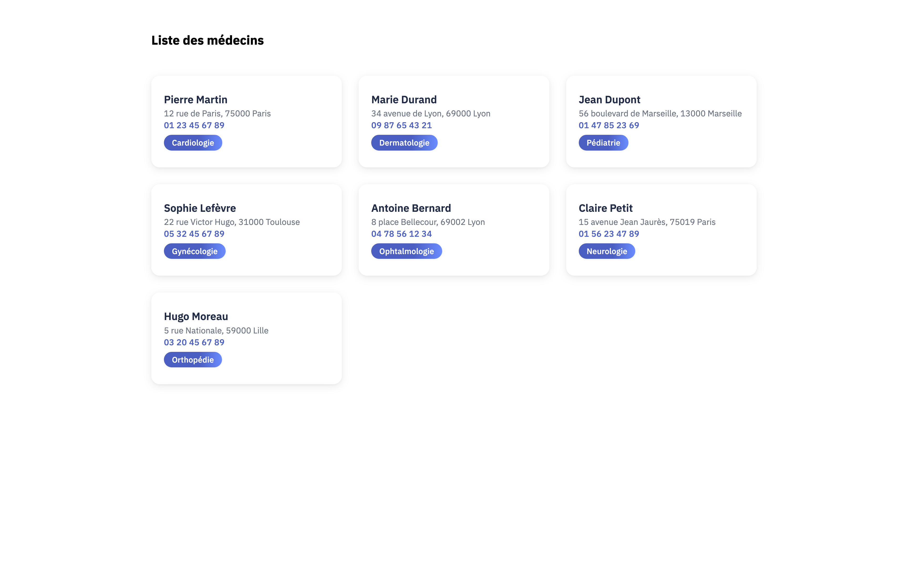

QUÊTE : GSB DOCTOR
📜 ORIGINE & OBJECTIFS
Initié durant l'Atelier Professionnel de seconde année, ce projet fait suite à une présentation sur l'écosystème JavaScript moderne. Le mandat était de concevoir une application modulaire pour le laboratoire Galaxy Swiss Bourdin (GSB), permettant la gestion centralisée des médecins et des visites.
Le défi technique résidait dans l'architecture découplée : un backend robuste sous NodeJS/Express exposant une API REST, consommé par une interface frontend réactive en Angular.
🖼️ APERÇU DE L'INTERFACE

⚙️ ARCHITECTURE & FONCTIONNALITÉS
Backend : API REST (NodeJS)
- 🔹 Routing Express : Endpoints structurés pour les requêtes HTTP.
- 🔹 Opérations CRUD : Manipulation complète des données (Médecins, Rapports, Médicaments).
- 🔹 Logique Métier : Validation des données et gestion des erreurs serveur.
Frontend : SPA (Angular)
- 🔸 Composants Intelligents : UI modulaire (Fiche Médecin, Tableaux dynamiques).
- 🔸 Injection de Dépendances : Services dédiés à la communication HTTP.
- 🔸 Expérience Utilisateur : Navigation fluide sans rechargement de page.
📑 SPÉCIFICATIONS TECHNIQUES
La phase de cadrage, étalée sur une semaine, a abouti à la rédaction d'un cahier des charges rigoureux. Ce document de référence détaillait les règles de gestion, le schéma relationnel des données ainsi que le contrat d'interface (endpoints) de l'API.
📜 TÉLÉCHARGER LE CAHIER DES CHARGES📅 PLANIFICATION (GANTT)
Planification sur 4 semaines, alternant développement backend et frontend.
🏆 BILAN DE COMPÉTENCES
L'expérience GSB Doctor m'a permis d'appréhender la réalité du développement Full Stack moderne. J'ai acquis une compréhension fine du cycle de vie d'une requête, de la base de données jusqu'au navigateur client. La collaboration en équipe a également renforcé mes réflexes en matière de gestion de versions (Git) et de coordination Frontend/Backend.
👥 ORGANISATION DU PROJET
Maîtrise d’œuvre :
Dalil Maksene et Théo Oger
Maîtrise d’ouvrage :
Intervenant professionnel